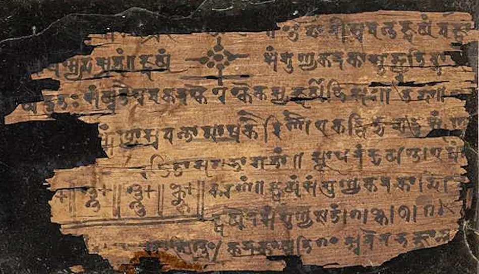
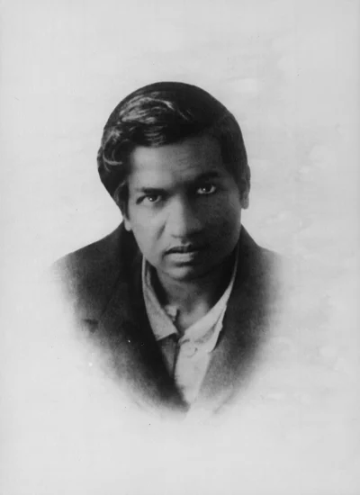

গণিত · গণিতের ইতিহাস
ভারতীয় উপমহাদেশের গণিতের বিবর্তন
বিজ্ঞান জিজ্ঞাসা
অঙ্কের ইতিহাসে উপমহাদেশ
৩০৫ লিখতে মাঝখানের শূন্য বলে দেয়, দশকের ঘরে কিছু নেই। এই ছোট চিহ্নের ইতিহাস বুঝতে গেলে পাণ্ডুলিপি, শিলালিপি, গণনার নিয়ম ও জ্যোতির্বিজ্ঞানের লেখা একসঙ্গে দেখতে হয়। আজকের রাষ্ট্রসীমার আগের এই ইতিহাসে আছে বিভিন্ন অঞ্চলের সংস্কৃত রচনা, ভাষ্য, শিক্ষার ধারা এবং উপমহাদেশের বাইরে ধারণার চলাচল। [১,২]
শুল্বসূত্রে দড়ি ও জ্যামিতি
শুল্বসূত্রগুলো বৈদিক আচারসংক্রান্ত গ্রন্থ। নির্দিষ্ট আকৃতি ও ক্ষেত্রফলের যজ্ঞবেদি নির্মাণের নিয়মে জ্যামিতির ব্যবহার দেখা যায়। একটি আয়তক্ষেত্রের কর্ণের বর্গের সঙ্গে দুই বাহুর বর্গের যোগফলের সম্পর্কও এসব লেখায় পাওয়া যায়। ৩ ও ৪ একক বাহুর আয়তক্ষেত্রের কর্ণ কেন ৫ একক, তা এই সম্পর্ক দিয়ে বোঝা যায়। বেদির আকার বদলালেও নির্ধারিত ক্ষেত্রফল বজায় রাখার প্রয়োজন ছিল নির্মাণপদ্ধতির পেছনে। [১,২]
স্থানমানের শূন্য থেকে হিসাবের শূন্য
বাখশালি পাণ্ডুলিপিতে শূন্য স্থানের জন্য বিন্দুর ব্যবহার দেখা যায়। পাণ্ডুলিপির কিছু ভূর্জপত্রের রেডিওকার্বন পরীক্ষায় ভিন্ন সময়সীমা এসেছে। লেখার সময় ও পাণ্ডুলিপির ইতিহাস বোঝার জন্য ওই ফল কীভাবে ব্যবহার করা উচিত, তা নিয়ে গবেষকদের মতভেদ আছে। ৬২৮ সালের ব্রহ্মস্ফুটসিদ্ধান্ত-এ ব্রহ্মগুপ্ত শূন্য, ধনাত্মক ও ঋণাত্মক সংখ্যা নিয়ে হিসাবের নিয়ম লিখেছিলেন। তাঁর যোগ-বিয়োগের অনেক নিয়ম পরিচিত শোনায়, তবে শূন্য দিয়ে ভাগের আলোচনা আধুনিক নিয়মের সঙ্গে মেলে না। [১,৩,৪]


জ্যোতির্বিজ্ঞান, ভাষ্য ও অসীম ধারা
৪৯৯ সালের আর্যভটীয়-তে আর্যভট গণনা ও জ্যোতির্বিজ্ঞানকে পাশাপাশি রেখেছিলেন। এতে জ্যার আধুনিক আত্মীয় সাইন ফাংশনের সঙ্গে সম্পর্কিত সারণি এবং কিছু রৈখিক সমীকরণের পূর্ণসংখ্যা সমাধানে কুট্টক পদ্ধতি আছে। পরে ভাস্কর দ্বিতীয়ের লীলাবতী ও বীজগণিত পাটিগণিত ও সমীকরণের শিক্ষায় গুরুত্বপূর্ণ হয়ে ওঠে। মূল রচনার সংক্ষিপ্ত পদ্যের সঙ্গে ভাষ্য যোগ হওয়ায় পাঠকেরা নিয়মের ব্যাখ্যা ও উদাহরণ পেতেন। [১,২,৫]
কেরালায় মাধব ও পরবর্তী গণিতবিদদের রচনায় ত্রিকোণমিতিক রাশি ও π হিসাবের জন্য অসীম ধারা পাওয়া যায়। অসীম ধারার প্রথম কয়েকটি পদ যোগ করে আনুমানিক মান পাওয়া যায়; আরও পদ নিলে সেই মান কীভাবে বদলায়, সেটিও ছিল গবেষণার বিষয়। পরবর্তী কেরালা গ্রন্থগুলো এসব ফল সংরক্ষণ ও ব্যাখ্যা করেছে। ইউরোপে ক্যালকুলাস বিকাশের সঙ্গে তুলনা করা যায়, তবে কেরালা থেকে ইউরোপে এই ফল পৌঁছেছিল কি না, তার পক্ষে নিশ্চিত নথি নেই। [১,২,৬]
আধুনিক গবেষণায় নতুন যোগাযোগ
ঔপনিবেশিক যুগে আধুনিক কলেজ, পরীক্ষা ও সাময়িকীর সঙ্গে গণিত শিক্ষার সম্পর্ক বদলায়। সেই যুগের শেষভাগে শ্রীনিবাস রামানুজনের সঙ্গে জি. এইচ. হার্ডির যোগাযোগ ভারত ও ব্রিটেনের গবেষণার একটি সুপরিচিত অধ্যায়। তাঁদের যৌথ কাজের একটি প্রশ্ন ছিল, কোনো পূর্ণসংখ্যাকে কত উপায়ে ধনাত্মক পূর্ণসংখ্যার যোগফল হিসেবে লেখা যায়। শুল্বসূত্রের নির্মাণ থেকে এই পার্টিশন সমস্যার দূরত্ব দেখায়, গণিতের ইতিহাসে প্রশ্ন ও জ্ঞানচর্চার প্রতিষ্ঠান দুটিই বদলায়। [১,৭]
